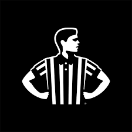
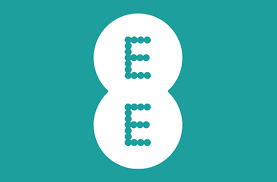

Experience
Not currently open to new roles or advisory engagements. Focused on Zumi. Previously I did advisory and fractional CTO work with early-stage founders.
Engineering Leadership CV → Executive Leadership CV →
Head of Engineering
Zumi, a DVx Ventures company
The company's first hire. Built the engineering organisation from scratch, transitioning from an outsourced model, creating the recruitment process and hiring framework, and growing the team to 8 engineers. Owned technology strategy, architecture, security, compliance, and vendor relationships alongside day-to-day delivery. Iterated and pivoted the product multiple times across AI, integrations, and data. Worked directly with founders, investors and board stakeholders on strategy and execution. DVx is a company creation platform backed by former executives from Tesla, Lululemon, Lyft, and others. The first product iteration built here is referenced in The Algorithm by Jon McNeil (Amazon bestseller, 2025).
Tech Lead & Engineering Manager - Payments
Moneyhub
Led a team of engineers, QA specialists, and UX professionals delivering payment and open finance products in a regulated environment. Responsible for technical delivery, people leadership, and roadmap across payment services. Worked closely with product, compliance, and commercial teams to build and ship open banking and payment infrastructure for enterprise clients and consumers.
Lead Solutions Architect
Moneyhub
Worked across engineering, product, sales, and enterprise customers to design technical solutions and maximise value delivered through the platform. Helped establish and scale the consultancy function, bridging technical, commercial, and product teams to support customer growth and strategic opportunities.
Tech Lead & Engineering Manager - Mobile Apps & Data
Moneyhub
Led the Mobile Apps and Data Engineering function, managing a team of 6 engineers and 2 QA specialists. Responsible for 9 mobile applications and data services used by 1.2 million users across 10+ enterprise clients. Cut deployment lead times from around 3 weeks to 2 days through automation and process improvements.
Software Engineer
Moneyhub
Worked on Moneyhub's core fintech platform: web applications, mobile products, APIs, and data integration services for enterprise clients in financial services. Built ETL pipelines, financial institution integrations, and open finance solutions working with complex financial and pension data.
Software Developer
Nimble
Joined a newly formed engineering team building the next generation (V2) of the company's e-learning platform. Worked with the acting CTO and wider team to deliver new features, improve existing functionality, and support the platform's ongoing development. Contributed across backend services, APIs, integrations, and deployments.
Software Developer & Data Protection Officer
Kappu
First permanent engineering hire, working directly with the founders to build and launch the product platform. Covered more than just engineering: technical strategy, architecture, GDPR compliance as DPO, and operational processes. Built and iterated the MVP, established engineering standards and deployment processes, and helped transition the team from contractor-led development to an internally owned engineering function.
BSc (Hons) in Computing
Canterbury Christ Church University
Foundation degree in Computing followed by BSc (Hons) in Computing. Where I found a deeper level of enjoyment in solving problems with technology.



Various Roles & Projects
Retail, Hospitality, and Other Things
Forklift driver, petrol station cashier, McDonald's server, card shop supervisor, bartender across pubs and a nightclub, garden centre, shoe retailer. Alongside all of that, a string of experiments that mostly didn't work: webhosting, apps, phone repair, and whatever else seemed like a good idea at the time. The jobs paid the bills and the experiments taught me a lot, but honestly I learnt a lot from both.